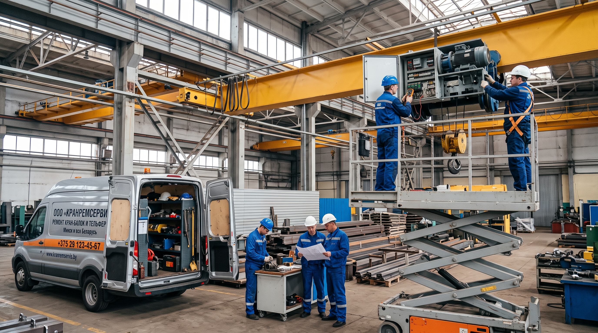
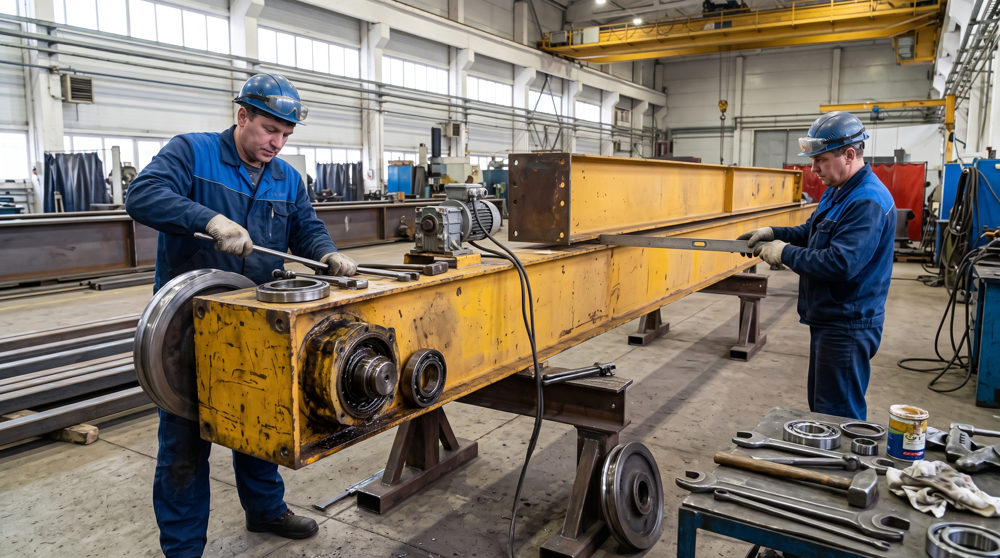
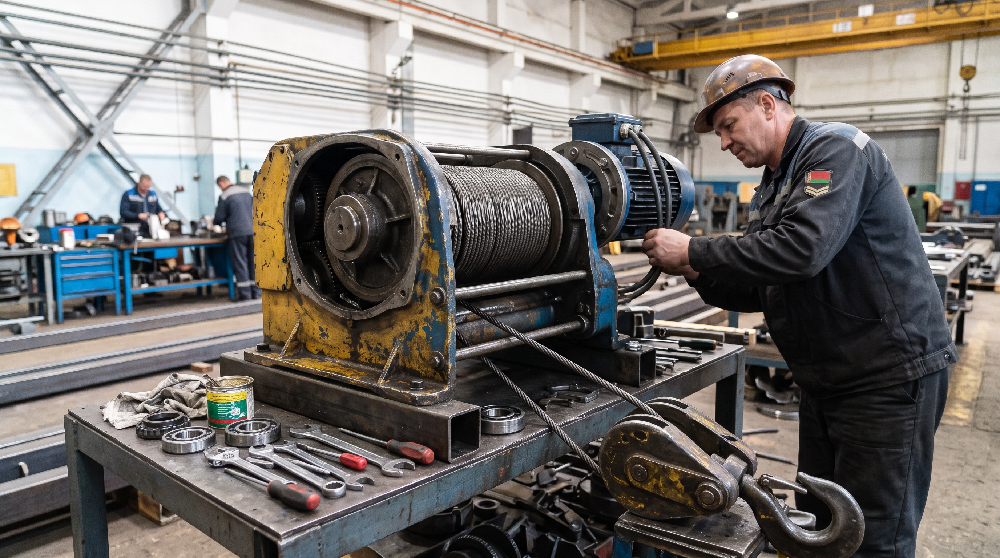
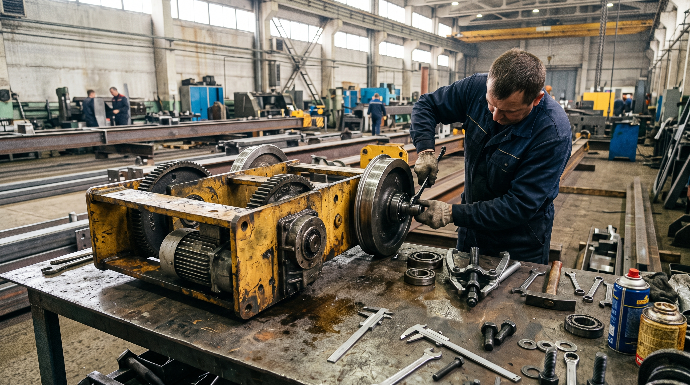
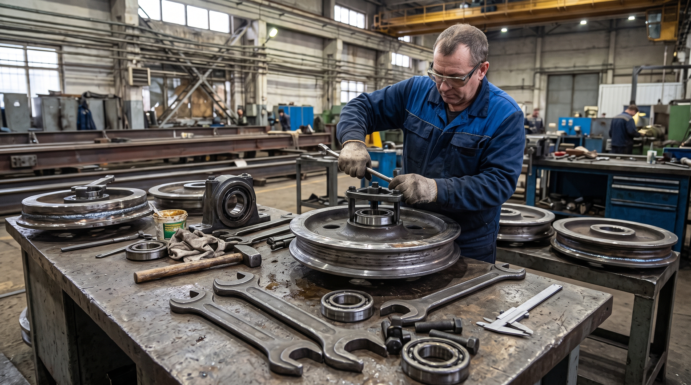
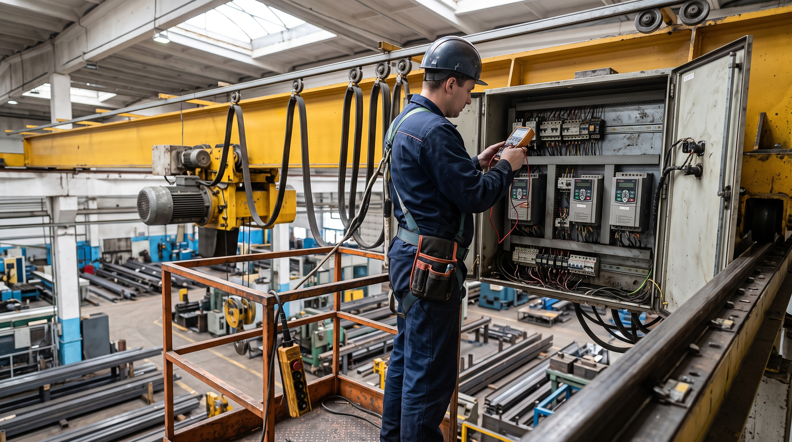
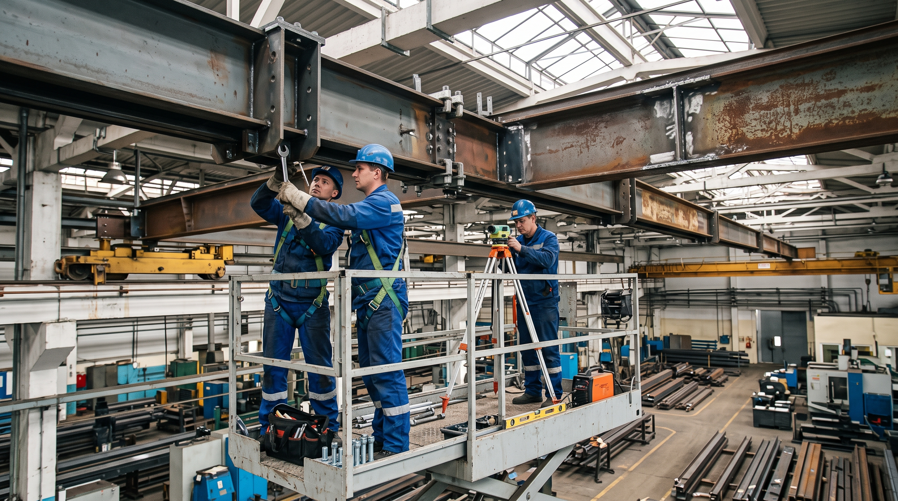

Ремонт кран-балок и тельферов в Минске и по всей Беларуси
ООО «КранРемСервис» выполняет капитальный, текущий и аварийный ремонт кран-балок и тельферов лёгкого и среднего подъёмного режима — оборудования, которое активно используется на складах, в цехах и на небольших производствах.
Работаем с опорными и подвесными кран-балками, оснащёнными электрическими и ручными талями. Восстанавливаем механические узлы, электрооборудование, металлоконструкции и системы безопасности.

Что входит в ремонт кран-балок и тельферов
1. Электрооборудование тали
- Ремонт электродвигателей тали
- Ремонт путевых выключателей
- Ремонт токоподвода и троллей
- Ремонт и замена кнопочных постов
- Ремонт контакторов и пускателей
2. Механизмы подъёма
- Ремонт лебёдок и барабанов тали
- Ремонт редукторов тельфера
- Ремонт и замена тормозов
- Замена канатов и цепей
- Ремонт крюковых подвесок
3. Тележки и ходовые колёса
- Ремонт тележек передвижения тельфера
- Замена и восстановление ходовых колёс
- Ремонт подвесных путей и монорельсов
- Ремонт концевых балок
- Проточка и наплавка колёс
4. Приборы безопасности и модернизация
- Замена ограничителей грузоподъёмности
- Проверка приборов безопасности
- Перевод на радиоуправление
- Установка кнопочного пульта с пола
- Покраска и антикоррозийная обработка
Виды ремонтных работ кран-балок
В зависимости от состояния оборудования и характера неисправности, ремонт кран-балки делится на три вида. Мы выполняем все три — от профилактики до аварийного восстановления.
1. Текущий ремонт
Плановый ремонт для поддержания кран-балки в рабочем состоянии. Выполняется регулярно, чтобы не допустить крупных поломок.
- Смазка узлов и механизмов
- Регулировка тормозов тали
- Замена изношенных канатов
- Замена пускателей и кнопочных постов
- Проверка приборов безопасности
Задача: не дать кран-балке остановиться.
2. Капитальный ремонт
Глубокое восстановление кран-балки с заменой или ремонтом основных узлов. Проводится, когда износ достиг критического уровня.
- Восстановление или замена редукторов тали
- Ремонт и замена электродвигателей
- Замена ходовых колёс и тележек
- Ремонт металлоконструкций балки
- Ремонт монорельса и подвесных путей
Задача: вернуть кран-балке заводские характеристики.
3. Аварийный ремонт
Срочный выезд бригады для устранения критических поломок. Работаем оперативно — чтобы производство не простаивало.
- Оперативный выезд на объект
- Устранение критических поломок тали
- Восстановление работы кран-балки
- Аварийная замена узлов и деталей
- Проверка кран-балки после ремонта
Задача: запустить кран-балку в кратчайшие сроки.
Этапы проведения ремонта кран-балки
Прозрачный процесс — от первого звонка до запуска кран-балки. Вы всегда знаете, на каком этапе находится работа и сколько она стоит.
Диагностика и дефектовка
Выезжаем на предприятие, проверяем состояние механизмов, электрики, тормозов, канатов и подвесных путей. По итогам осмотра составляем дефектную ведомость — документ, в котором перечислены все неисправности и необходимые работы.
Срок: 1 рабочий день.
Согласование сметы
На основе дефектной ведомости рассчитываем стоимость работ, запасных частей и сроки. Согласовываем смету с вами — без скрытых доплат в процессе.
Срок: 1–2 рабочих дня.
Ремонтные работы
Выполняем ремонт — на объекте или на нашей базе, в зависимости от характера работ. Заменяем детали, выполняем сварочные и электромонтажные работы, восстанавливаем механизмы и электрооборудование.
Срок: от 1 до 5 рабочих дней — в зависимости от объёма.
Испытания и сдача
Проверяем работу кран-балки под нагрузкой, тестируем все механизмы и приборы безопасности. Оформляем исполнительную документацию. Выдаём гарантию на выполненные работы.
Срок: 1 рабочий день.
Устройство кран-балки и тельфера — что мы ремонтируем
Кран-балка — это лёгкое и среднее подъёмное оборудование, которое используется на складах, в цехах и на небольших производствах. Чтобы понять, почему она требует ремонта, важно знать её устройство. Ниже — основные узлы, которые мы восстанавливаем.
Мост кран-балки
Основная несущая металлоконструкция. Состоит из одной или двух балок, соединённых с концевыми балками. По мосту перемещается тельфер или электрическая таль. Мы ремонтируем и усиливаем металлоконструкции, устраняем трещины, деформации и коррозию.

Концевые балки
Расположен по краям моста. На них установлены ходовые колёса, которые перемещают кран-балку по подвесным путям. Ремонт концевых балок включает замену колёс, ремонт подшипниковых узлов и восстановление геометрии.

Тельфер и электрическая таль
Главный рабочий механизм кран-балки. Тельфер передвигается по мосту и поднимает груз. Включает механизм подъёма (лебёдку), тележку передвижения и крюковую подвеску. Мы ремонтируем редукторы, тормоза, барабаны, канаты и крюковые подвески.

Тележка передвижения
Механизм, который перемещает тельфер или таль по мосту кран-балки. Состоит из рамы, ходовых колёс и подшипниковых узлов. Со временем колёса изнашиваются, появляется люфт, движение становится неравномерным. Мы восстанавливаем тележку: меняем колёса, ремонтируем подшипники, регулируем ход.

Ходовые колёса
Обеспечивают движение кран-балки по подвесным путям. Со временем изнашиваются, появляются трещины и выработка. Мы выполняем замену, проточку и наплавку колёс, а также ремонт буксовых узлов.

Электрооборудование
Включает электродвигатели, кнопочные посты, путевые выключатели, токоподвод, контакторы и частотные преобразователи. Ремонт электрооборудования — один из самых частых заказов. Мы диагностируем и восстанавливаем все элементы электрической схемы кран-балки.

Подвесные пути и монорельсы
Пути, по которым движется кран-балка. Со временем они проседают, изнашиваются и требуют нивелировки. Мы выполняем ремонт, замену и нивелировку подвесных путей, ремонт креплений и сварных швов.

Запросить расчёт ремонта кран-балки
Заполните форму — мы свяжемся с вами, уточним детали и рассчитаем стоимость работ. Ответим в течение 1 рабочего дня.